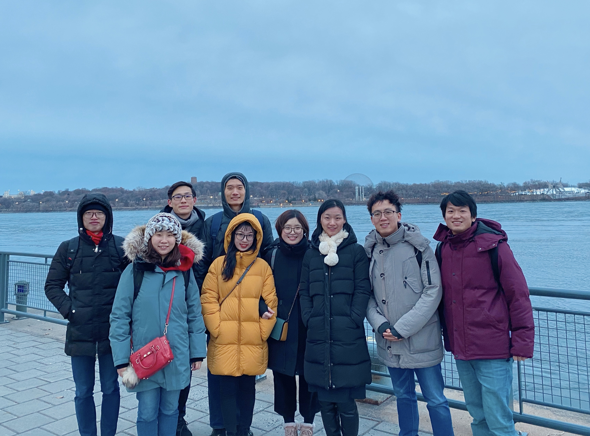
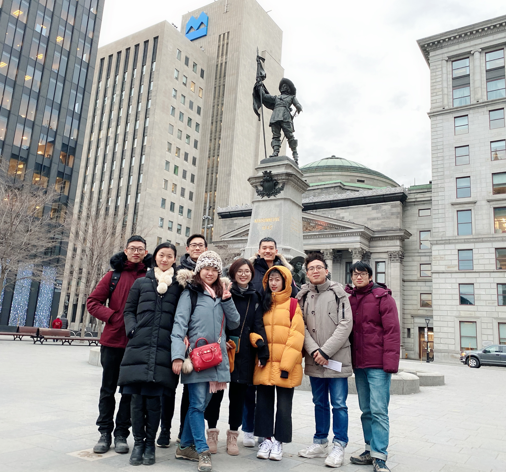

Kingston-Montreal NLP/IR workshop
Date and Time： 10:00am - 13:00pm, 26 Dec. 2019
Food： takeaway pizza
Location: RALI, University of Montreal.
Activity
All attendances are encouraged to present their work in turn and comment on others' work.
A projector will be ready.
Registration is freely charged for everyone, but food and drinking might be shared by all attendances other than the invited speakers from Kingston (will be less than 10 CAD per person)
Invited speakers
Feng Nie, joint Ph.D. student between Sun Yat-Sen University and MSRA, now visiting Queens' University
Boyuan Zheng, undergraduate student, Northeastern University, now visiting Queens' University
Jiachen Gu, Ph.D. student, University of Science and Technology of China, now visiting Queens' University
Ziou Zheng, first-year Ph.D. student in Queens' University
Organizing committees
General Chair: Qianqian Xie
Sponsorship Chair: Zhenzhen Li
Social Event Chair: Yifan Nie
Demo Chair: Benyou Wang
Local Arrangement Chair: Haiming Wu
Awards
Outstanding Empirical Award ： Jiachan Gu
Best Presentation Award： Feng Nie
Best Promissing Research Award: Yifan Nie
Young Researcher Award: Boyuan Zheng
Distinguished Server Award: Yifan Nie
Ps: the attached files are the unsigned versions.
Some pictures
the closing sesssion in the RALI lab.

the social event on the first day, the Old Bay.

the social event on the first day, in front of the Church.
